11 Normaliseren
Ontwerpen van een relationele database via een normalisatieproces tot en met de derde normaalvorm.
In een database worden gegevens over een bepaald onderwerp bijgehouden. Dit zou in principe in één grote tabel kunnen, maar dat is niet erg efficiënt. Gebruikers hebben vaak een specifieke informatiebehoefte, ze willen slechts bepaalde gegevens zien die aan bepaalde voorwaarden voldoen. Het ontwerp moet er voor zorgen dat je aan de informatiebehoefte van de databasegebruiker kunt voldoen. Dat kan niet goed met één grote tabel. Ook het onderhoud van gegevens verloopt moeizaam in een dergelijke tabel.
In een relationele database worden de gegevens in afzonderlijke tabellen ondergebracht. Door middel van sleutelvelden worden de tabellen met elkaar verbonden. Hierdoor kunnen gerelateerde gegevens uit verschillende tabellen opgevraagd worden. Hierbij is het van belang dat de gegevens goed over logisch samenhangende tabellen verdeeld zijn en dat de gegevens maar op één plaats worden opgeslagen, dus in één veld in één tabel. Ook mogen gegevens niet tegenstrijdig (inconsistent) zijn, zoals bijvoorbeeld de vermelding van een niet bestaand klantnummer in een tabel facturen.
Als hetzelfde gegeven vaker dan 1 keer worden opgeslagen, dan heet dat ook wel redundantie.
Elk record moet iets unieks hebben waarmee je het record in de tabel kunt vinden. Dit unieke is de inhoud (waarde) van een of meerdere velden en wordt de primaire sleutel van de tabel genoemd.
Een goed ontwerp van de database is van belang. En dit ontwerp wordt gemaakt voordat met de bouw van de database begonnen wordt. Vergelijk het met de bouw van een huis waar de architect eerst een tekening maakt en pas dan gaat de aannemer het huis bouwen. Om tot een goed ontwerp te komen heeft Edgar Codd een ontwerptechniek bedacht die bekend staat onder de naam normaliseren. Via een aantal stappen wordt de tabellenstructuur van de database vastgesteld. Na elke stap ontstaat een nieuwe vorm van de database die daardoor steeds verder genormaliseerd wordt. Er bestaan 5 normaalvormen, waarbij de eerste normaalvorm het minst en de vijfde normaalvorm het meest genormaliseerd is. In de praktijk zijn de meeste databases genormaliseeerd tot de derde normaalvorm.
De notatiewijze voor een gegevensverzameling (tabel), de verzamelde gegevens (velden in de tabel) en de sleutel ziet er als volgt uit:
KLANT(klantnr, naam, straat, huisnr, postcode, plaats)
Hierbij is KLANT de naam van de gegevensverzameling, de tabelnaam dus. En tussen de haakjes staan de veldnamen. De onderstreepte veldnamen vormen de sleutel van de tabel.
11.1 Sleutel
In de tabellen van een relationele database zijn gelijksoortige gegevens opgeslagen in de velden van records (rijen). Records moeten gevonden kunnen worden via een unieke waarde van deze gegevens. Zo’n unieke waarde wordt een kandidaatsleutel genoemd. Vaak is er in een tabel maar één kandidaatsleutel, maar het is mogelijk dat er meerdere kandidaatsleutels zijn. Uit de beschikbare kandidaatsleutels wordt er eentje gekozen tot de (primaire) sleutel. Een tabel moet daarom zo ontworpen worden dat er een sleutel gedefinieerd kan worden. Wanneer zo’n sleutel niet uit de gegevens samengesteld kan worden moet er een kunstmatig sleutelveld gemaakt worden. Vaak is dat een nummer, een id. Enkele voorbeelden van mogelijke sleutelvelden:
- Artikelnummer
- Klantnummer
- Ordernummer
- Factuurnummer
- Burgerservicenummer (BSN)
- IBAN
Een sleutel bestaat uit 1 of meerdere veldnamen uit een tabel. Iedere sleutelwaarde is uniek; d.w.z. dat iedere sleutelwaarde slechts één keer in de tabel mag voorkomen. Verder moet de sleutel minimaal zijn, uit zo min mogelijk veldnamen bestaan.
Voorbeeld 1
Mogelijke unieke kenmerken voor een auto zijn het chassisnummer en het kenteken. Hierdoor kan bijvoorbeeld het kenteken een sleutel zijn in een tabel met gegevens van auto’s:
AUTO(kenteken, merk, type, gewicht, brandstof, kleur)
Voorbeeld 2
Een tabel PRODUCTEN heeft de volgende inhoud:
| afmeting | kleur | lengte |
|---|---|---|
| 8 | rood | 50 |
| 10 | groen | 50 |
| 12 | blauw | 50 |
| 14 | geel | 50 |
| 8 | rood | 100 |
| 10 | groen | 100 |
| 12 | blauw | 100 |
| 14 | geel | 100 |
Zowel afmeting, kleur als lengte kan niet als sleutel voor de tabel dienen, omdat in elk veld (kolom) geen unieke waarde voorkomt. Via een combinatie van velden is wel een unieke waarde te vinden. Ga na dat de volgende combinaties geschikte kandidaatsleutels voor deze tabel zijn:
- afmeting, lengte
- kleur, lengte
Voorbeeld 3
Een deel van de inhoud van een tabel met adresgegevens ziet er als volgt uit:
| straat | huisnummer | postcode | plaats |
|---|---|---|---|
| Dorpstraat | 12 | 1234 AB | Janstad |
| Dorpstraat | 14 | 1234 AB | Janstad |
| Dorpstraat | 12 | 4321 BA | Karelsdijk |
Ga na dat de sleutel niet uit één veld kan bestaan en dat postcode, huisnr een geschikte kandidaatsleutel is:
Voorbeeld 4
Een bedrijf heeft de volgende gegevensverzameling voor klanten:
KLANTEN(naam, adres, postcode, plaats, telnr)
Het kan voorkomen dat twee klanten op hetzelfde adres wonen. Indien dit het geval is hebben ze echter verschillende namen: bijvoorbeeld H. Linde sr. en H. Linde jr. Het kan ook voorkomen dat exact dezelfde klantnaam tweemaal in de tabel voorkomt. In dat geval betreft het twee klanten die op verschillende adressen wonen.
Ga na dat de sleutel hier niet uit één veld kan bestaande te vinden en dat de volgende combinaties geschikte kandidaatsleutels voor deze tabel zijn:
- naam, telnr
- naam, adres, postcode
In de praktijk wordt vaak een uniek klantnummer voor elke klant ingevoerd.
Voorbeeld 5
Een kleine bibliotheek heeft ongeveer 9000 boeken (dubbele exemplaren mogelijk) en 400 leden. Men heeft de volgende informatiebehoeften:
- Eens per jaar moeten etiketten geprint kunnen worden voor alle leden.
- Eens per half jaar moet een lijst uitgedraaid kunnen worden met alle boeken die de bibliotheek bezit en die er als volgt uitziet (het aantal wordt berekend bij het maken van deze lijst):
| ISBN | Titel | Auteur | Aantal |
|---|---|---|---|
| 9080022217 | Praktijk van het zweefvliegen | W. Adriaansen | 1 |
| 9062552277 | De wolken en het weer | G. de Bont | 2 |
- Van ieder boek dat uitgeleend wordt moet bijgehouden worden: het nummer van het boek, het nummer van het lid en de datum waarop het boek uiterlijk terug bezorgd dient te worden. Eens per week worden er etiketten en brieven uitgeprint betreffende de boeken die minstens 1 maand te laat zijn.
- Op het etiket staan de gegevens van het lid waarvan 1 of meerdere boeken minstens 1 maand te laat zijn. In de brief staan de gegevens van het lid en de gegevens van de boeken die minstens 1 maand te laat zijn.
- De database met leden-, boeken- en uitleenadministratie heeft drie tabellen:
LID(Lidnr, Naam, Adres, Postcode, Plaats)
BOEK(Boeknr, ISBN, Titel, Auteur)
UITLEEN(Boeknr, Lidnr, Terugdatum)
Een gedeeltelijke invulling van deze tabellen is hierna te zien.
| Lidnr | Naam | Adres | Postcode | Plaats |
|---|---|---|---|---|
| 1 | G. Hannes | Orion 2 | 3434 TT | Tiel |
| 2 | G. Rotgans | Venus 23 | 3434 RR | Tiel |
| 3 | R. Wagner | Jupiter 2 | 3434 SP | Tiel |
| Boeknr | ISBN | Titel | Auteur |
|---|---|---|---|
| 1 | 9080022217 | Praktijk van het zweefvliegen | W. Adriaansen |
| 2 | 9062552277 | De wolken en het weer | G. de Bont |
| 3 | 9062552277 | De wolken en het weer | G. de Bont |
| Lidnr | Boeknr | Terugdatum |
|---|---|---|
| 2 | 1 | 12-10-2011 |
| 2 | 2 | 12-10-2011 |
| 3 | 3 | 11-10-2011 |
In de tabel UITLEEN is Terugdatum de datum waarop de uitleentermijn afloopt. Als een boek terug wordt gebracht, wordt het betreffende record (= rij uit de tabel) uit de tabel UITLEEN verwijderd. In de tabel UITLEEN staan dus alleen gegevens over boeken die op dit moment uitgeleend zijn. Wanneer het boek opnieuw uitgeleend wordt dan wordt er een nieuw record met een nieuwe Terugdatum aangemaakt. Er is een plan voor een nieuwe opzet waarbij alle uitleenrecords gedurende een jaar bewaard worden. De opzet van de tabel moet hierdoor gewijzigd worden.
Ga na dat in de huidige opzet van de tabel UITLEEN het veld Boeknr inderdaad als sleutel kan dienen, dat dit in de nieuwe opzet niet meer kan en dat de combinatie Boeknr, Terugdatum in de nieuwe opzet een kandidaatsleutel is.
11.2 Normalisatieproces
Bij het normalisatieproces worden de verzamelde gegevens (attributen) verdeeld in afzonderlijke gegevensgroepen en wordt er voor verbindingen tussen deze groepen gezorgd. Het uiteenrafelen en groeperen van gegevens wordt normaliseren genoemd.
In plaats van de term gegevensgroep wordt ook de term objecttype, entiteit of tabel gebruikt.
Het normalisatieproces bestaat uit een aantal stappen waarin de structuur van de database vastgesteld. Het resultaat van zo’n stap wordt een normaalvorm genoemd. Gestart wordt met de nulde normaalvorm (0 NV). Daarna ontstaan achtereenvolgens de eerste normaalvorm (1 NV), de tweede normaalvorm (2 NV) en tot slot de derde normaalvorm (3 NV).
Aan de hand van een voorbeeld wordt het normaliseren besproken.
INFORMATIEBEHOEFTE
De informatiebehoefte van groothandel Verschoor bestaat uit het genereren van facturen. Een voorbeeld van zo’n factuur is in de volgende afbeelding te zien.
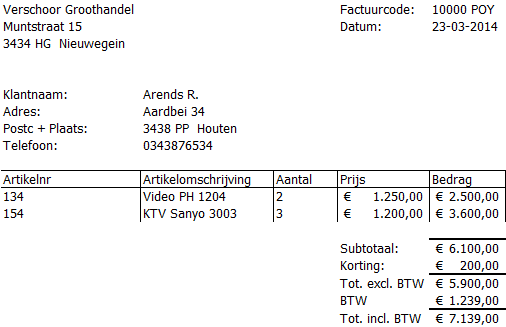
Figuur 11.1: Voorbeeld van een factuur van Verschoor.
11.2.1 Nulde normaalvorm (0 NV)
De eerste stap is het bepalen van de benodigde gegevens, uitgaande van de informatiebehoefte. Op de factuur zijn verschillende soorten gegevens te zien. Deze kunnen onderscheiden worden in:
Constante gegevens
Dit zijn gegevens die steeds hetzelfde zijn. Op de factuur zijn dit de gegevens van de groothandel zelf (naam en adresgegevens). Deze gegevens kunnen in de loop van de tijd wel veranderen, maar gedurende een bepaalde periode mogen ze als constant beschouwd worden. Het is zelfs mogelijk deze gegevens vooraf op de factuur te drukken.
Constante gegevens worden niet opgenomen naar de database.
Procesgegevens
Procesgegevens zijn gegevens die uit andere gegevens kunnen worden afgeleid, bijvoorbeeld doordat ze uit die andere gegevens berekend kunnen worden. Op de factuur komen de volgende procesgegevens voor:
-
Bedrag, wordt berekend viaAantalxPrijs -
Subtotaal, wordt berekend door alle bedragen op te tellen. -
Tot. excl. BTW, berekend uitSubtotaal-Korting -
BTW, wordt berekend via 21% xTot. excl. BTW -
Tot. incl. BTW, berekend uitTot. excl. BTW-BTW
Procesgegevens worden niet opgenomen in de database.
Elementaire gegevens
Elementaire gegevens zijn alle essentiële gegevens die niet opgesplitst kunnen worden. Op de factuur komen de volgende elementaire gegevens voor: datum, Klantnaam, Adres, Postcode, Plaats, Telefoon, Artikelnr, Artikelomschrijving, Aantal, Prijs en Korting.
Elementaire gegevens worden in de database opgenomen.
Samengestelde gegevens
Dit zijn gegevens die opgesplitst kunnen worden in elementaire gegevens. De zo ontstane elementaire gegevens worden in de database opgenomen. Op de factuur is Factuurcode een samengesteld gegeven, omdat deze te splitsen is in een factuurnummer (10000) en een afkorting van de verkoper (POY). Aan de groep met elementaire gegevens wordt daarom toegevoegd Factuurnr en Verkoper.
Adres zou ook opgesplitst kunnen worden in straatnaam en huisnummer. Voor deze informatiebehoefte is dit niet van belang en daarom is hiervoor niet gekozen.
De verzamelde lijst met elementaire gegevens (eigenschappen, attributen) voor de factuur is dan
FACTUUR(Factuurnr, Verkoper, Datum, Klantnaam, Adres, Postcode, Plaats, Telefoon, Artikelnr, Artikelomschrijving, Aantal, Prijs, Korting)
De attributen die vaker dan één keer voorkomen worden ook wel een Repeterende Groep (Repeating Group) genoemd, afgekort als [RG]{.term. Omdat op de factuur meerdere factuurregels met artikelen voorkomen vormen de attributen Artikelnr, Artikelomschrijving, Aantal en Prijs een RG. Het is als voorbereiding op de volgende stap handig om een RG in de lijst aan te duiden.
FACTUUR(Factuurnr, Verkoper, Datum, Klantnaam, Adres, Postcode, Plaats, Telefoon, Korting, RG [Artikelnr, Artikelomschrijving, Aantal, Prijs])
Als laatste moet een sleutel worden aangewezen. Dit wordt Factuurnr en dit attribuut wordt in de lijst onderstreept. De 0 NV ziet er dan als volgt uit:
FACTUUR(Factuurnr, Verkoper, Datum, Klantnaam, Adres, Postcode, Plaats, Telefoon, Korting, RG [Artikelnr, Artikelomschrijving, Aantal, Prijs])
11.2.2 Eerste normaalvorm (1 NV)
Om van de nulde naar de eerste normaalvorm te komen worden alle RG’s afgesplitst en in een nieuwe gegevensgroep (tabel) ondergebracht. Om een koppeling tussen de tabellen mogelijk te maken wordt de sleutel van de tabel waaruit de RG vandaan komt aan de nieuwe tabel toegevoegd. Van de nieuwe tabel wordt dan de sleutel vastgesteld. Meestal is dit een combinatie van een sleutelattribuut uit de RG met de sleutel van de oorspronkelijke tabel, de vreemde sleutel (foreign key).
In de 0 NV komt maar 1 RG voor met Artikelnr als kandidaatsleutel:
RG[Artikelnr, Artikelomschrijving, Aantal, Prijs]
Deze gegevensgroep wordt ondergebracht in een nieuwe tabel FACTUURREGEL waaraan de sleutel van de oorspronkelijke tabel, Factuurnr, wordt toegevoegd. Samen vormen deze de samengestelde sleutel van de nieuwe tabel FACTUURREGEL.
De 1 NV wordt dan:
FACTUUR(Factuurnr, Verkoper, Datum, Klantnaam, Adres, Postcode, Plaats, Telefoon, Korting)
FACTUURREGEL(Factuurnr, Artikelnr, Artikelomschrijving, Aantal, Prijs)
11.2.3 Tweede normaalvorm (2 NV)
Om van de eerste naar de tweede normaalvorm te komen moeten alle gegevensgroepen (tabellen) met een samengestelde sleutel onderzocht worden. Van alle attributen die geen onderdeel van de sleutel vormen, moet bekeken worden of deze functioneel afhankelijk zijn van een deel van de sleutel. Zo ja, dan moeten deze attributen in een nieuwe tabel worden ondergebracht en moet het sleuteldeel waarvan ze afhankelijk zijn aan deze tabel worden toegevoegd.
Een attribuut A is functioneel afhankelijk van attribuut B als bij iedere waarde van B precies één waarde van A hoort. Zo is de titel van een boek functioneel afhankelijk van het ISBN nummer omdat bij ieder ISBN nummer precies één titel hoort.
Alleen tabel FACTUURREGEL heeft een samengestelde sleutel en hiervan moeten de niet-sleutelvelden onderzocht worden op eventuele functionele afhankelijkheid van een deel van de sleutel, van Factuurnr of van Artikelnr.
Artikelomschrijving, is functioneel afhankelijk van Artikelnr. Immers bij ieder artikelnummer hoort precies één omschrijving van het artikel.
Aantal is niet functioneel afhankelijk van Artikelnr en ook niet van Factuurnr. Het is een waarde die door de klant wordt bepaald en kan per factuur een andere waarde hebben.
-
Prijs, is meestal niet functioneel afhankelijk van Artikelnr. Dit komt omdat de prijs meestal van de verkoopdatum afhangt en er in de loop van de tijd prijswijzigingen kunnen optreden. Ook kan de prijs door onderhandelingen bepaald worden. Het attribuut Prijs bevat dus de waarde van de verkoopprijs. In dit voorbeeld wordt gekozen om het oorspronkelijke attribuut Prijs te vervangen door twee nieuwe attributen:
- Verkoopprijs, deze is niet functioneel afhankelijk van Artikelnr
- Adviesprijs, deze is wel functioneel afhankelijk van Artikelnr
Het onderzoek heeft nu opgeleverd dat twee attributen functioneel afhankelijk zijn van Artikelnr, namelijk Artikelomschrijving en Adviesprijs. Deze twee gegevens worden ondergebracht in een nieuwe tabel ARTIKEL en tevens wordt het veld Artikelnr hieraan toegevoegd, daar zijn de twee gegevens immers van afhankelijk. Dit veld is tevens de sleutel van de nieuwe tabel.
De 2 NV wordt dan:
FACTUUR(Factuurnr, Verkoper, Datum, Klantnaam, Adres, Postcode, Plaats, Telefoon, Korting)
FACTUURREGEL(Factuurnr, Artikelnr, Artikelomschrijving, Aantal, Verkoopprijs)
ARTIKEL(Artikelnr, Artikelomschrijving, Adviesprijs)
11.2.4 Derde normaalvorm (3 NV)
Om van de tweede naar de derde normaalvorm te komen moeten alle tabellen onderzocht worden. Wanneer hierin niet-sleutel attributen zitten die functioneel afhankelijk zijn van andere niet-sleutel attributen, dan moeten deze afhankelijke attributen in een nieuwe tabel worden ondergebracht en moet het attribuut waarvan ze afhankelijk zijn aan deze tabel worden toegevoegd.
Veronderstel dat in dit voorbeeld de Klantnaam uniek is. In dat geval zijn in de tabel FACTUUR de attributen Adres, Postcode, Plaats en Telefoon functioneel afhankelijk van het attribuut Klantnaam want bij iedere Klantnaam hoort precies één waarde voor Adres, Postcode, Plaats en Telefoon.
Ook wanneer de Klantnaam niet uniek is, worden dit soort bij elkaar behorende gegevens toch in een nieuwe tabel ondergebracht waarbij dan een uniek klantnummer wordt bedacht.
De klantgegevens worden in een nieuwe tabel KLANT ondergebracht en het veld Klantnaam wordt hiervan de sleutel.
De 3 NV wordt dan:
FACTUUR(Factuurnr, Verkoper, Datum, Klantnaam, Korting)
KLANT(Klantnaam, Adres, Postcode, Plaats, Telefoon)
FACTUURREGEL(Factuurnr, Artikelnr, Artikelomschrijving, Aantal, Verkoopprijs)
ARTIKEL(Artikelnr, Artikelomschrijving, Adviesprijs)
11.2.5 Samenvatting normalisatieproces
- 0 NV
- Inventarisatie van attributen (velden maken, repeterende groepen (RG) aangeven, sleutel onderstrepen.
- 1 NV
- Repeterende groepen afsplitsen als aparte tabellen en de sleutel van de “oude” tabel meenemen. De sleutel van de nieuwe tabel is een samengestelde sleutel.
- 2 NV
- Alleen voor tabellen met samengestelde sleutels: attributen afsplitsen die afhankelijk zijn van een deel van de sleutel. Dit wordt de sleutel van een nieuwe tabel.
- 3 NV
- Voor alle tabellen: als een attribuut afhankelijk is van een niet-sleutelveld, dan deze afhankelijkheid afsplitsen naar een nieuwe tabel.
11.3 Gegevens Structuur Diagram (GSD)
Een gegevensstructuurdiagram (GSD) is een tekening waarmee de relaties tussen tabellen op een overzichtelijke manier kunnen worden weergegeven.
Figuur 11.2: Gegevensstructuurdiagram van de tabellen met de onderlinge relaties.
Tussen deze vier tabellen bestaan verschillende relaties, zoals:
- Klant - FACTUUR : Een factuur hoort bij precies één klant en een klant kan meerdere facturen hebben. In het GSD gaat er vanuit KLANT meerdere lijnen naar FACTUUR, aangegeven via een vertakking aan het eind.
- FACTUUR - Factuurregel : Een factuurregel hoort bij één factuur en op een factuur kunnen meerdere factuurregels staan.
- FACTUURREGEL - Artikel : Een factuurregel heeft altijd betrekking op één artikel en een bepaald artikel kan op meerdere factuurregels voorkomen.
Vaak wordt bij de pijl ook het attribuut (veld) vermeld waarmee de koppeling tot stand wordt gebracht.
Figuur 11.3: Gegevensstructuurdiagram nu met koppelvelden
Bij een GSD worden de volgende symbolen gebruikt:
- Rechthoek: voor een tabel.
- Enkele lijn: voor een relatie van één op één.
- Vertakte lijn: voor een relatie van een op veel.
Een relatiediagram in Access ziet er als volgt uit
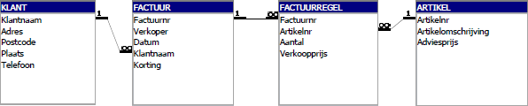
Figuur 11.4: Relaties weergegeven in Microsoft Access
11.4 Case - Normalisatie dierenkliniek
Een dierenkliniek houdt op dit moment de behandeling van dieren bij in een Excel tabel. Deze heeft de volgende vorm.
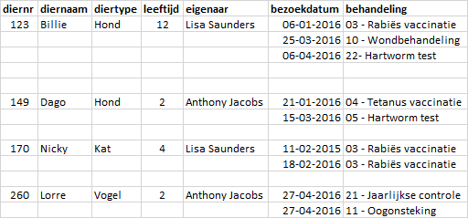
Figuur 11.5: Behandelingen dieren
Het plan is om deze gegevens in een database bij te gaan houden waarvoor een genormaliseerde structuur van tabellen moet worden opgesteld.
0 NV
Alle gegevens zijn elementaire gegevens, behalve het attribuut behandeling. Dit is een samengesteld gegeven dat opgesplitst kan worden in een behandelnr en een behandelnaam.
Per dier worden meerdere behandelingen bijgehouden, bezoekdatum en behandeling vormen dus een Repeterende Groep (RG).
DIER(diernr, diernaam, diertype, leeftijd, eigenaar, RG [bezoekdatum, behandelnr, behandelnaam])
1 NV
De repeterende groep wordt afgesplitst van tabel DIER en in een nieuwe tabel BEZOEK geplaatst. Aan deze tabel wordt de sleutel van tabel DIER toegevoegd. De sleutel van de nieuwe tabel is samengesteld uit drie velden. Ga dit na.
DIER(diernr, diernaam, diertype, leeftijd, eigenaar)
BEZOEK(diernr, bezoekdatum, behandelnr, behandelnaam)
2 NV
In tabel BEZOEK hangt het veld behandelnaam alleen af van het veld behandelnr en wordt daarom uit deze tabel gehaald en in een nieuwe tabel BEHANDELING ondergebracht waaraan tevens het sleutelveld behandelnr wordt toegevoegd.
DIER(diernr, diernaam, diertype, leeftijd, eigenaar)
BEZOEK(diernr, bezoekdatum, behandelnr)
BEHANDELING(behandelnr, behandelnaam)
11.5 Opgaven
norm003 - Cursusoverzicht
Bij een bedrijf kunnen de werknemers cursussen volgen. De directie wenst periodiek een overzicht te krijgen van de door de werknemers gevolgde cursussen volgens onderstaande lay-out:
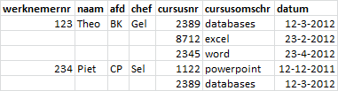
Dezelfde cursussen kunnen op meerdere tijdstippen worden aangeboden. Een werknemer kan eventueel een bepaalde cursus op een ander tijdstip opnieuw volgen.
Ontwerp voor deze gegevens een genormaliseerd systeem.
norm004 - Garage
Een garage heeft een kaartenbak met alle klanten. Op de kaarten worden ook gegevens van de auto(’s) van de klant bijgehouden en gegevens van de beurten van die auto’s. Hieronder staan een paar voorbeelden van de layout van zo’n kaart:
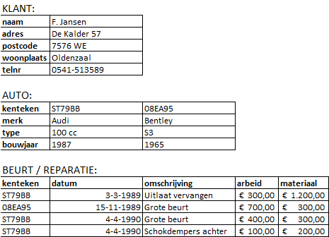
Voor het beschreven kaartsysteem moet een database ontworpen worden. Ontwerp voor deze gegevens een genormaliseerd systeem zonder extra attributen toe te voegen en teken een GSD.
norm005 - Klantcontacten
De tabel KLANT bevat klantgegevens. De tabel CONTACT bevat de gegevens van contactpersonen bij een klant. Bij een klant kunnen 0, 1 of meer contactpersonen horen en 1 contactpersoon hoort bij precies 1 klant. Bij de contactpersonen van een klant komt de combinatie achternaam en voornaam maar één keer voor. Verder kunnen meerdere contactpersonen van een klant hetzelfde telefoonnummer hebben.
KLANT(Klantnr, Naam, Adres, Postcode, Plaats)
CONTACT(Achternaam, Voornaam, Bedrijf, telefoonnr)
- Definieer een geschikte sleutel bij de tabel CONTACT zonder een extra veld toe te voegen.
- De tabellen CONTACT en KLANT moeten gekoppeld worden. Leg uit welke velden gekoppeld moeten worden en wat primaire en secundaire tabel is bij de koppeling.
- Stel dat je de structuur van de tabel CONTACT mag veranderen. Wat is een meer gebruikelijke manier om de tabellen CONTACT en KLANT te koppelen en wat is dan de nieuwe structuur? Het doel is een eenvoudiger invoer met behoud van de relatie.
norm006 - Hoveniersbedrijf
Het hoveniersbedrijf “Fruithobby” drijft op kleine schaal handel in uitsluitend fruitbomen. De fruitbomen worden aangekocht, in voorraad opgeslagen en doorverkocht aan de hobbyist. Het bedrijf voert een viertal soorten fruitbomen: appel, peer, pruim en noot en betrekt deze van een drietal leveranciers die de volgende aanbiedingen hebben gedaan:
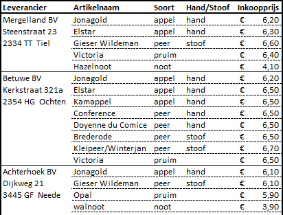
Ontwerp hiervoor een genormaliseerde database. Geef van iedere tabel de structuur (velden + sleutel).
norm007 - Onderdelen
Een autobedrijf gebruikt een gegevensbank voor het beheer van onderdelen zoals uitlaten, remvoeringen en schokdempers ten behoeve van montage in verschillende autotypen. Elk onderdeel heeft een uniek onderdeelnummer en een onderdeelomschrijving. In verband met technische wijzigingen van autotypen is per onderdeel aangegeven het beginbouwjaar en het eindbouwjaar van het autotype (of autotypen) waarvoor dit onderdeel geschikt is.
Zo moet bijvoorbeeld opgeslagen kunnen worden dat een bepaald onderdeel geschikt is voor een Audi 100 met bouwjaren ’83 t/m ’88. En ook dat dit onderdeel geschikt is voor een Audi 80 van de bouwjaren ’80 t/m ’87.
Om het onderdelenverbruik te voorspellen wordt van elk autotype het verkoopaantal (= aantal verkochte auto’s) per bouwjaar geregistreerd. Tevens is per autotype een type-omschrijving opgenomen. Per onderdeel is de verkoopprijs aangegeven. Tevens zijn de montagekosten en de normtijd, die per autotype kunnen verschillen, in de gegevensbank opgenomen.
Ontwerp voor deze informatiebehoefte een genormaliseerde database.
norm008 - Relaties
Bekijk de volgende tabellen:
STUDENT(studentnr, studentnaam, adres, woonplaats, klas, …)
STAGEBEDRIJF(bedrijfsnr, bedrijfsnaam, …)
- Welk proces zal van deze twee tabellen gebruik maken?
- De gegevens die het proces genereert worden opgeslagen in een aparte tabel STAGEPLAATS. Geef aan hoe deze tabel eruit zal zien.
norm009 - Optimaliseren database
Bekijk de volgende tabel:
ROOSTER(dag, uur, lokaal, docentcode, klas)
De tabel moet voldoende mogelijkheden hebben om in de praktijk te kunnen voldoen. Om dit te testen zijn een aantal vragen geformuleerd.
Kun je met deze tabel de vragen niet beantwoorden, kijk dan of je de vragen wel kunt beantwoorden door nieuwe velden aan de tabel toe te voegen.
- Het veld dag heeft als waarden “ma, di,…, vr”. Biedt de tabel de mogelijkheid dat een docent twee keer in de week dezelfde klas lesgeeft?
- Is deze tabel ook te gebruiken om collegezalen in te roosteren die geschikt zijn voor meerdere klassen?
- Is het in dit roosterbestand mogelijk om werkcolleges op te nemen? Aan een werkcollege neemt de helft van het aantal studenten van een klas deel.
- Is het mogelijk met deze tabel groepen studenten te clusteren uit diverse groepen klassen en studiejaren?
norm010 - Sleutels en tabellen
Ga uit van de volgende verzameling gegevens van docenten:
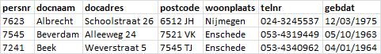
- Geef voor elk veld aan wat het gegevenstype is.
- Wat is de sleutel van de tabel? Is dit een primaire sleutel?
- Welke zou de sleutel zijn als het veld uit de vorige vraag niet in de tabel voorkwam? Is dit dan nog steeds een primaire sleutel?
norm011 - Doe-het-zelf zaak
Een doe-het-zelfzaak verkoopt een groot aantal artikelen. Bestellingen ter aanvulling van de voorraad worden gedaan via een inkooporder.
De bestellingen gaan per leverancier altijd via dezelfde inkoper. De inkoper maakt de diverse prijsafspraken voor de te leveren artikelen. De levering van een artikel is niet gebonden aan één leverancier. Op een inkooporder staat altijd minstens één orderregel. Het maximum aantal orderregels is 24. Voor een voorbeeld van een inkooporder zie de volgende afbeelding.
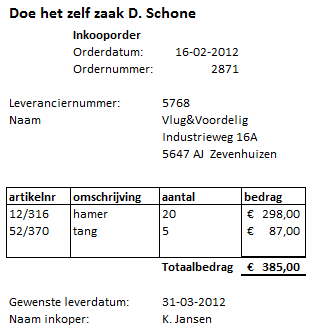
- Ontwerp een database passend bij het orderformulier. Geef daarbij alle gevolgde stappen van het normalisatieproces aan.
- Maak een bijbehorend gegevensstructuurdiagram.
norm012 - Vrachtbrief
Een groothandel vervoert binnen Nederland zelf de vrachten naar de diverse klanten. De vrachtwagen wordt bij de expeditie geladen en de vracht wordt vervolgens naar de diverse klanten gebracht.
Per dag wordt voor elke vrachtwagen één vrachtbrief gemaakt met daarop de informatie voor de chauffeur. In de figuur hierna staat een voorbeeld van zo’n vrachtbrief.
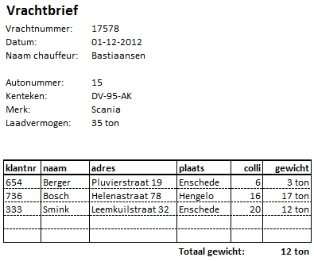
- Ontwerp een genormaliseerde database passend bij de vrachtbrief. Ga ervan uit dat een vrachtwagen uniek geïdentificeerd wordt met het kenteken. Geef daarbij alle gevolgde stappen van het normalisatieproces aan.
- Wat verandert er in het ontwerp als niet het kenteken de auto’s uniek zou identificeren, maar alleen het autonummer?
- Maak een bijbehorend gegevensstructuurdiagram.
norm013 - Bestelbon
Bekijk onderstaande bestelbon van de firma DataRex.
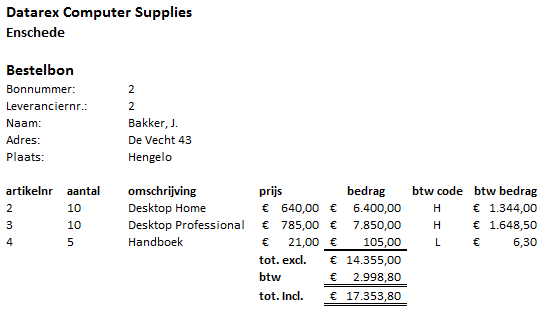
- Welke procesgegevens zijn er in de bestelbon te vinden?
- Leg uit wat wordt bedoeld met een herhalende (of repeterende) groep. Waaruit bestaat deze bij de bestelbon?
- Ontwerp een genormaliseerde database passend bij de bestelbon. Geef daarbij alle gevolgde stappen van het normalisatieproces aan.
- Maak een bijbehorend gegevensstructuurdiagram.
norm014 - Boekingen
Het boekingsbureau Cultuur heeft voor het seizoen 2001 - 2002 het Passe-partout ingevoerd. Cultuurliefhebbers kunnen uit een bijzonder gevarieerd aanbod 5 voorstellingen kiezen en deze tegen een vriendenprijsje bezoeken. Het boekingsbureau heeft van elke voorstelling een aantal toegangs-kaarten beschikbaar en doet de overgebleven kaarten in de losse verkoop. Als de belangstelling groter is dan het beschikbaar aantal kaarten dan wordt een wachtlijst bijgehouden. De office-manager van boekingsbureau Cultuur heeft gevraagd om hiervoor een database te ontwerpen. Zij wil naast het aanmaken en afdrukken van de passe-partouts ook overzichtslijsten van de deelnemers per voorstelling. Een voorbeeld van een passe-partout zie je in de figuur hierna
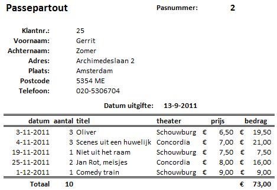
- Normaliseer het passe-partout. Geef alle stappen van het normalisatieproces duidelijk weer. Houd hierbij rekening met de volgende zaken.
- De datum van uitgifte van het Passe-partout wordt bij het aanmaken vastgelegd als eigenschap van het passepartout.
- De data op de regel van de voorstelling is de datum van die betreffende voorstelling.
- Bij een Passe-partout moeten kaarten van 5 verschillende voorstellingen zijn gekocht.
- Een voorstelling wordt geïdentificeerd met een identificatienummer, dat niet staat afgedrukt op het passepartout.
- Maak het bijbehorende gegevensstructuurdiagram in Bachman weergave. Geef ook de verbindingsvelden aan.
norm015 - Integratie
In verband met het Europese kampioenschap voetbal wil de NOS in samenwerking met een aantal kranten een klein geautomatiseerd informatiesysteem ontwikkelen. De bedoeling is de televisiekijkers en de krantenlezers zo goed mogelijk te informeren over het kampioenschap. Hiervoor zijn een aantal informatiebehoeftes opgesteld. Bepaal de tabellen met de velden die nodig zijn om in de informatiebehoefte te kunnen voorzien. Indien nodig kun je de eerder gemaakte tabellen uitbreiden met nieuwe velden.
Informatiebehoeftes
Een overzicht per land met de spelers die opgesteld kunnen worden en wie de trainer is. Het is mogelijk dat spelers dezelfde naam hebben. De namen van de landen kunnen niet hetzelfde zijn.
Een overzicht van de begeleiders per land en hun functie.
Een lijst met topscorers (naam en aantal goals)
Een lijst van clubs met daarop de spelers die door de club aan een bepaald ander land worden uitgeleend.
Integreer de vier afzonderlijke informatiebehoeftestructuren tot één totale geïntegreerde informatie-behoefte-structuur. Maak een weergave voor deze geïntegreerde structuur.
norm016 - Postcodes
In een bestand zijn alle plaatsen, straatnamen, huisnummers en postcodes van Nederland opgeslagen. In de volgende afbeelding zie je een deel van de tabel.
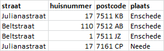
Bij een gegeven straat, huisnummer en plaats hoort een postcode. De cijfers geven de stad, het dorp, de buurt of wijk aan. Het komt niet voor dat twee plaatsnamen dezelfde cijfers hebben. De letters zijn specifieker en geven de straat of een deel daarvan aan.
- Welk attribuut is functioneel afhankelijk van welk ander attribuut?
- Bepaal een sleutel voor deze tabel.